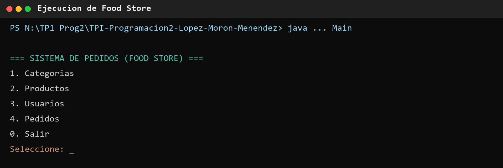
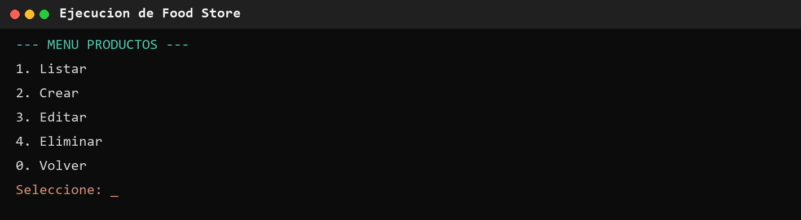
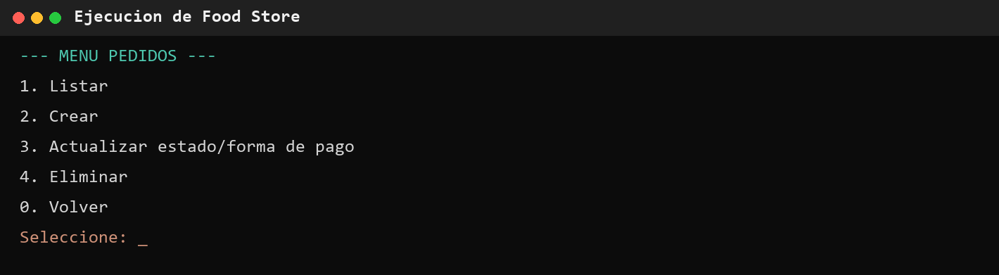

| Institución | Universidad Tecnológica Nacional (UTN) — Facultad Regional Mendoza |
| Carrera | Tecnicatura Universitaria en Programación |
| Materia | Programación II |
| Integrantes | Federico López Nicolás Morón Ezequiel Menéndez |
| Proyecto | Food Store — Sistema de Gestión de Pedidos |
| Entrega | 18 de junio de 2026 |
| Carátula | 1 |
| Índice | 2 |
| 1. Resumen, objetivos y alcance funcional | 3 |
| 2. Marco teórico | 4 |
| 3. Arquitectura y organización del proyecto | 5 |
| 4. Modelo de dominio | 6 |
| 5. Persistencia y modelo de datos | 7 |
| 6. Flujo de ejecución y casos de uso | 8 |
| 7. Validaciones y manejo de errores | 9 |
| 8. Decisiones técnicas | 10 |
| 9. Dificultades y soluciones | 11 |
| 10. Pruebas, estado y limitaciones | 12 |
| 11. Capturas del sistema | 13 |
| 12. Instalación y ejecución | 14 |
| 13. Conclusión, bibliografía y enlaces | 15 |
pom.xml, el esquema SQL y la ejecución local del proyecto.
Food Store es una aplicación de consola desarrollada en Java para administrar la operación básica de un local gastronómico. El sistema gestiona categorías, productos, usuarios y pedidos, y persiste la información en una base de datos relacional MySQL mediante JDBC.
Integrar en un proyecto funcional los contenidos de Programación II: Programación Orientada a Objetos, herencia, interfaces, colecciones, enumeraciones, excepciones, arquitectura por capas, acceso a datos y diseño relacional.
| Módulo | Operaciones disponibles |
|---|---|
| Categorías | Listar, crear, editar y eliminar lógicamente. |
| Productos | Listar, crear, editar y eliminar; asociar a una categoría. |
| Usuarios | Listar, crear, editar y eliminar; validar correo único. |
| Pedidos | Listar, crear, agregar detalles, actualizar estado y forma de pago, y eliminar. |
Java es un lenguaje orientado a objetos, tipado y multiplataforma. El proyecto aplica encapsulamiento, herencia, interfaces, polimorfismo básico, colecciones y sobrescritura de métodos.
JDBC es la API estándar para acceder desde Java a bases relacionales. Se utilizan Connection, PreparedStatement, ResultSet y DriverManager.
MySQL almacena información estructurada en tablas relacionadas. Las claves primarias identifican registros y las claves foráneas garantizan relaciones entre entidades.
Maven configura Java 21, administra MySQL Connector/J y ejecuta las fases de limpieza, compilación, prueba y empaquetado definidas por el ciclo de construcción.
El patrón Data Access Object concentra SQL y mapeo relacional. De esta forma, los menús y servicios no dependen directamente de consultas concretas.
En vez de borrar registros físicamente, se actualiza el atributo eliminado. Esto permite conservar referencias y datos históricos.
Base.Pedido implementa Calculable.| Capa / paquete | Responsabilidad | Componentes |
|---|---|---|
| Presentación | Leer opciones y mostrar resultados. | Main, clases Menu* |
service | Coordinar casos de uso y aplicar validaciones. | Cuatro clases *Service |
dao | Ejecutar SQL y mapear filas a objetos. | Clases CRUD* |
entities | Representar el modelo y su comportamiento. | Seis entidades e interfaz |
config | Centralizar y comprobar la conexión. | DatabaseConnection, TestConnection |
enums | Restringir valores válidos. | Rol, Estado, FormaPago |
exceptions | Representar errores del dominio. | Tres excepciones personalizadas |
Los menús conocen a los servicios; los servicios conocen a los DAO y entidades; los DAO conocen la configuración JDBC y las entidades. La base de datos no es accedida directamente desde la presentación.
src/ ├── Main.java y Menu*.java ├── config/ ├── dao/ ├── entities/ ├── enums/ ├── exceptions/ └── service/
Pedido.addDetallePedido() crea el detalle y solicita el recálculo.Pedido.calcularTotal() suma los subtotales de la colección.Base.equals() compara entidades persistidas por clase e identificador.toString() generan representaciones para la consola.La aplicación utiliza una base de datos MySQL ya creada y configurada para el proyecto, por lo que no requiere una instalación local en el entorno habitual del equipo. El archivo schema.sql documenta su estructura y permite reproducirla en otro entorno. Todas las tablas incluyen identificador, fecha de creación y marca de baja lógica.
| Tabla | Datos principales | Relaciones |
|---|---|---|
categoria | nombre, descripción | 1:N con producto |
producto | precio, stock, imagen, disponible | FK a categoría |
usuario | datos personales, mail único, rol | 1:N con pedido |
pedido | fecha, estado, total, forma de pago | FK a usuario |
detalle_pedido | cantidad y subtotal | FK a pedido y producto |
CATEGORIA (id PK)
1 ─────── N PRODUCTO (categoria_id FK)
USUARIO (id PK)
1 ─────── N PEDIDO (usuario_id FK)
1
│
N
DETALLE_PEDIDO
├── pedido_id FK
└── producto_id FK ─── N:1 PRODUCTO
PreparedStatement.RETURN_GENERATED_KEYS.ResultSet a entidades.JOIN para reconstruir relaciones.try-with-resources.Main crea el Scanner y los cuatro servicios.| Operación | Implementación |
|---|---|
| Create | INSERT y recuperación de clave generada. |
| Read | SELECT filtrando registros activos. |
| Update | UPDATE por ID y eliminado = FALSE. |
| Delete | UPDATE eliminado = TRUE; no se ejecuta borrado físico. |
| Regla | Capa | Respuesta |
|---|---|---|
| Precio no negativo | ProductoService | StockInvalidoException |
| Stock no negativo | ProductoService | StockInvalidoException |
| Cantidad mayor que cero | PedidoService | StockInvalidoException |
| Stock suficiente | PedidoService | StockInvalidoException |
| Correo obligatorio y único | UsuarioService | MailDuplicadoException o mensaje |
| Entidad activa existente | Servicios | EntidadNoEncontradaException |
| Entrada numérica válida | Menús | Captura de NumberFormatException |
Indica que un ID no existe o corresponde a un registro eliminado.
Impide crear o editar un usuario con un correo ya utilizado.
Expresa valores inválidos de precio, stock o cantidad solicitada.
Se captura en servicios para informar fallos de persistencia con contexto.
Los DAO utilizan try-with-resources, por lo que conexiones, sentencias y resultados se cierran aunque ocurra una excepción. Antes de eliminar, los menús solicitan confirmación explícita.
| Decisión | Justificación | Impacto |
|---|---|---|
| Aplicación de consola | La consigna se centra en POO y persistencia. | Interfaz simple y menor complejidad accidental. |
| Arquitectura por capas | Separa interacción, negocio y SQL. | Mayor mantenibilidad y responsabilidades claras. |
| Patrón DAO | Evita consultas SQL en menús y entidades. | Persistencia localizada y reutilizable. |
| Clase abstracta Base | Las entidades comparten ID, fecha y baja lógica. | Reduce duplicación y unifica identidad. |
| Enums | Roles, estados y pagos poseen valores limitados. | Evita cadenas inconsistentes en el dominio. |
| Baja lógica | Se requiere conservar relaciones e historial. | Los listados filtran eliminado = FALSE. |
| PreparedStatement | Separa SQL de valores ingresados. | Mejora seguridad y evita problemas de formato. |
| JDBC sin ORM | Permite practicar SQL y acceso a datos directo. | Mapeo explícito, adecuado al tamaño del proyecto. |
| Maven | Centraliza versión de Java y dependencias. | Compilación reproducible mediante comandos estándar. |
La separación de menús, servicios, entidades y DAO aplica principalmente responsabilidad única. La interfaz Calculable define un contrato pequeño y específico. Para una evolución futura, convendría inyectar los DAO mediante interfaces para reducir el acoplamiento de los servicios.
Dificultad: reconstruir productos, usuarios y pedidos junto con sus relaciones. Solución: consultas con JOIN y mapeo manual de cada fila a entidades Java.
Dificultad: continuar el flujo después de insertar una entidad. Solución: utilizar Statement.RETURN_GENERATED_KEYS y asignar el ID devuelto al objeto.
Dificultad: eliminar registros sin romper relaciones. Solución: adoptar baja lógica y filtrar registros activos en búsquedas y listados.
Dificultad: evitar que los menús contengan SQL y reglas de negocio. Solución: organizar el proyecto en presentación, servicios, DAO, dominio y configuración.
Dificultad: una compra afecta cabecera, detalles, total y stock. Estado actual: las operaciones están separadas. Mejora necesaria: agruparlas en una única transacción con commit y rollback.
| Prueba | Resultado |
|---|---|
mvn clean package | BUILD SUCCESS |
| Compilación | 28 archivos fuente; destino Java 21. |
| Empaquetado | Generado target/mi-proyecto-1.0-SNAPSHOT.jar. |
config.TestConnection | Conexión MySQL establecida. |
Main y submenús | Ejecución correcta. |
| Base de datos | Conexión JDBC verificada. |
| Pruebas automatizadas | No existen fuentes en src/test. |
pedido.null ante fallos y puede provocar errores secundarios.Implementar transacciones JDBC; actualizar total y stock de forma atómica; extraer configuración a variables de entorno; usar BigDecimal para importes; agregar pruebas unitarias y de integración.
Capturas generadas a partir de la ejecución real del proyecto compilado. Se muestran operaciones de navegación que no requieren modificar datos.



El equipo utiliza una base MySQL ya provisionada. Para ejecutar el sistema se requiere acceso a esa base y una configuración JDBC válida. schema.sql queda disponible como referencia y respaldo de la estructura.
private static final String URL =
"jdbc:mysql://localhost:3306/pedidos_db";
private static final String USER = "TU_USUARIO";
private static final String PASSWORD = "TU_CONTRASENA";
Las credenciales reales deben mantenerse fuera de commits públicos.
mvn clean package mvn dependency:copy-dependencies -DoutputDirectory=target/dependency
# Windows java -cp "target/classes;target/dependency/*" Main # Linux / macOS java -cp "target/classes:target/dependency/*" Main
Para comprobar únicamente la conexión, ejecutar la clase config.TestConnection. Desde IntelliJ IDEA se puede iniciar directamente la clase Main.
Food Store integra correctamente los conceptos centrales de Programación II en una aplicación de consola persistente. La separación entre menús, servicios, DAO y entidades permite comprender el flujo del sistema y mantener responsabilidades definidas. Las operaciones CRUD principales están implementadas, Maven compila el proyecto y la conexión con MySQL fue verificada.
El siguiente paso técnico prioritario es garantizar la consistencia del agregado pedido: cabecera, detalles, total y stock deben actualizarse dentro de una transacción. También resulta necesario agregar pruebas automatizadas y externalizar las credenciales.
Repositorio:
github.com/EzequielMenendez/TPI-Programacion2-Lopez-Moron-Menendez